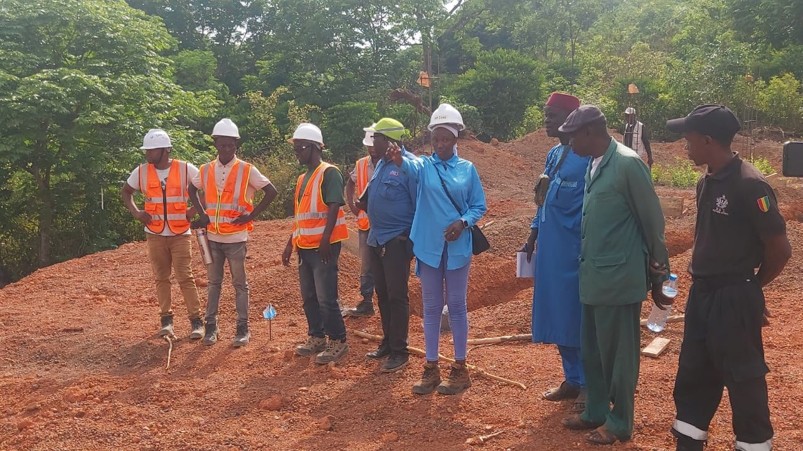
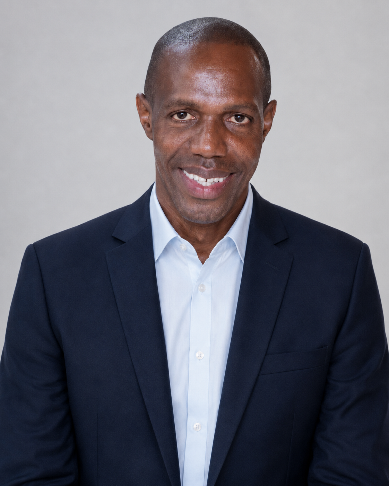
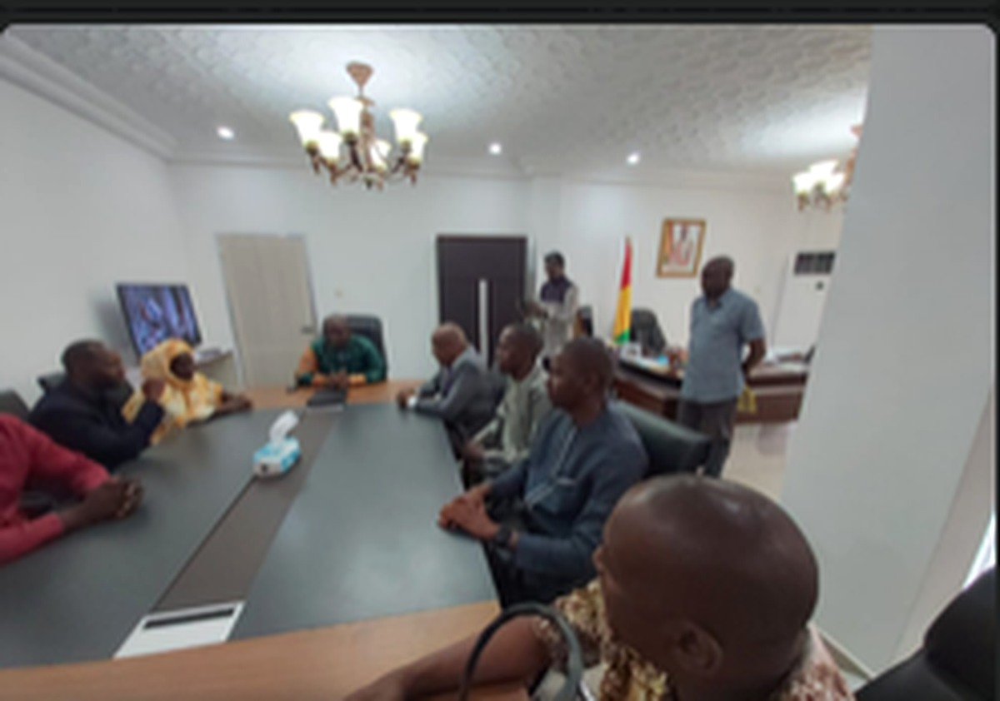
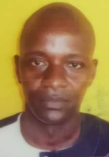
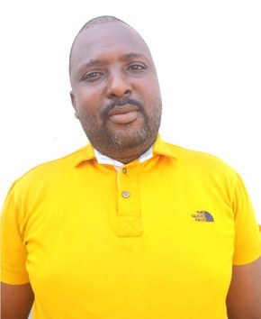
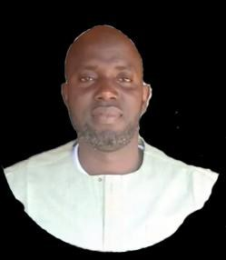
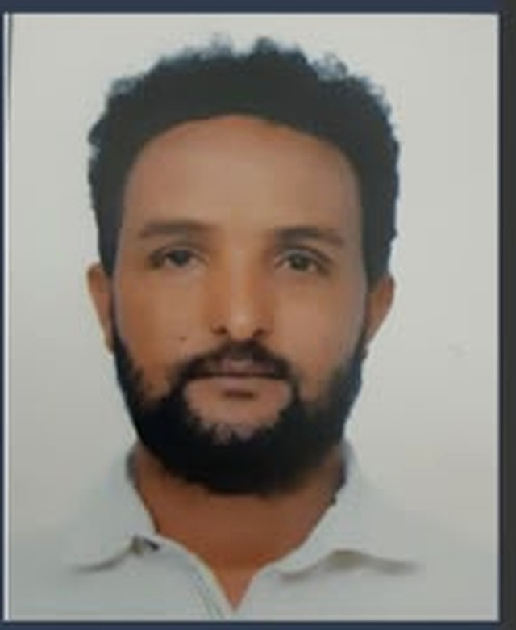

Thierno Mamadou Bah

Aboubacry Person Diallo
Thierno Mamadou Bah

Nyanga KOLIE
Mamadou Bhoye DIALLO

Fofana Lacine

Lancine SANGARE
Laye Moriba DIALLO

Hadgu Abay Adal
HSSE
Aboubacry Person Diallo
+224 626 817 279 · xbkinsan33@yahoo.com · xbkinsan33@gmail.com
Thierno Mamadou Bah
+224 661 86 47 42 · xbkinsan33@gmail.com
Nyanga KOLIE
+224 622 689 606 · kolibernard@yahoo.fr
Mamadou Bhoye DIALLO
+224 621 70 04 39 · dialloamadoubhoye64@gmail.com
Fofana Lacine
+224 620 46 00 16 · lansan2008@yahoo.fr
Lancine SANGARE
+224 628 93 83 08 · lancinesang626@gmail.com
Laye Moriba DIALLO
+224 610 71 83 65
Hadgu Abay Adal
+211 922 200 361 · hadguab77@gmail.com